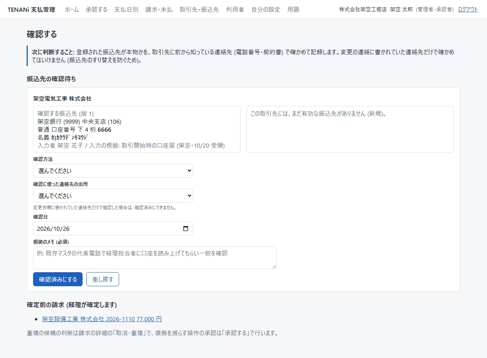
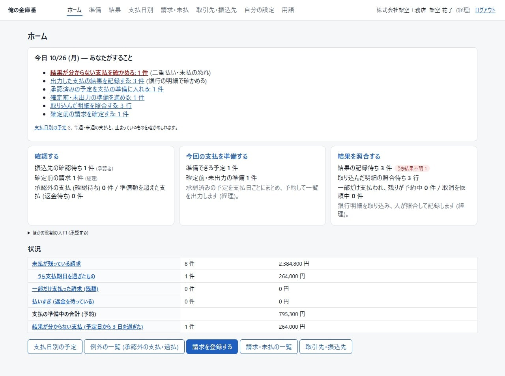
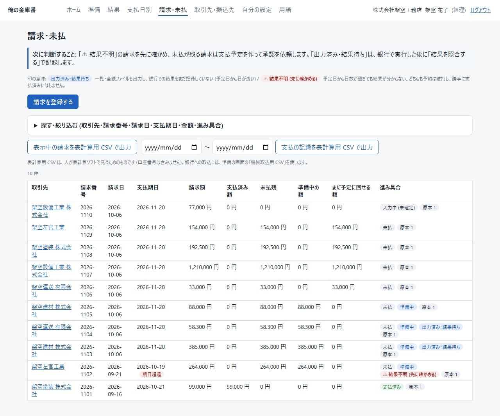
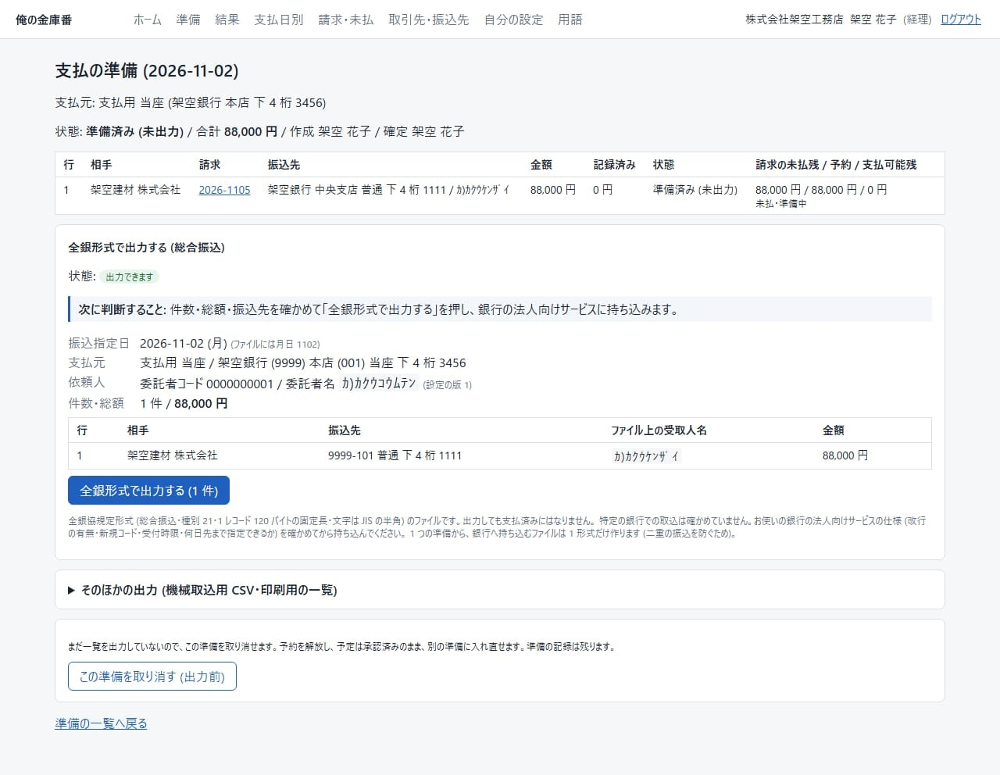
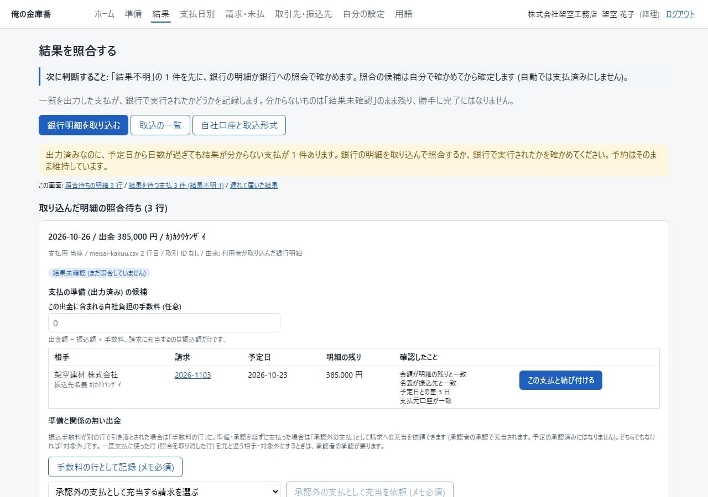

振込先と金額を、手で打ち込んでいる
請求書を見ながら、ネットバンキングに振込先・金額を1件ずつ入力。打ち間違いや、振込先の取り違えが心配。
PROBLEM
取引先への支払は、毎月かならずやってきます。請求書を見て、ネットバンキングに打ち込んで、社長に「払っておきます」と伝える。その流れのどこかに、こんな心配はありませんか。
請求書を見ながら、ネットバンキングに振込先・金額を1件ずつ入力。打ち間違いや、振込先の取り違えが心配。
「いいよ」と言ってもらったけれど、何をいくらで認めたのかが、どこにも残っていない。
取引先を名乗る連絡がにせもので、別の口座に振り込んでしまう。そんな心配があっても、確かめ方が決まっていない。
同じ請求書を二度払ってしまう。逆に、払ったはずの請求が残っていた。
どの請求書が、いくら未払で残っているのか。通帳と請求書を見比べないと分からない。
HOW IT WORKS
請求書を登録する人と、承認する人を分けて、支払を1本の流れにします。振込は、これまでどおり銀行の画面で行います。
経理社長
経理担当が銀行・支店・口座番号・名義を登録。社長が、前から知っている電話番号などで取引先に確かめて「確認済みにする」。確認するまで、その振込先は使えません。
経理
取引先・請求番号・請求日・支払期日・金額を入れて「確定する」。請求書のPDFや写真を原本として付けられます。支払日と金額を決めて「承認を依頼する」。
社長
金額・相手・振込先(口座番号の下4桁と名義)・予定日・請求書を見て「承認する」。違っていれば、理由を書いて「差し戻す」。
経理
「準備を確定する」で、その額を二重に払わないよう押さえます。「全銀形式で出力する」で、銀行に持ち込む振込ファイルができます。
銀行の画面で
振込ファイルを、銀行の法人向けネットバンキングの総合振込に取り込み、内容を確かめて振り込みます。この操作は、このシステムの外で行います。
経理
ネットバンキングから明細のファイル(CSV)を取り込み、出金の行と支払を見比べて「この支払と結び付ける」。ここで初めて「支払済み」になります。
承認しても、振込はまだ行われません。このシステムは、銀行への送信や送金はしません。お金が動くのは、経理担当が銀行の画面で振込を実行したときだけです。
DEMO
製品の画面の文言をもとに、社長がスマホで承認する流れを再現しました。画面の中の光っているボタンを押して進めてください。
製品の画面の文言をもとにした再現イメージです。実際の画面とは見た目が異なります。会社名・名前・金額・口座はすべて架空です。
PROTECT
支払の事故は、ひとりで決めて、ひとりで振り込めるところから起きます。登録する人と確かめる人を分け、決まった順番でしか進めない作りです。
新しい振込先や、変更された振込先は、入力した人とは別の承認者が「確認済みにする」まで使えません。確かめ方と、確かめに使った連絡先の出所、根拠のメモを残します。

支払予定は、作った人以外の承認者が承認します。社長が経理を兼ねていても、自分で作った予定は自分では承認できません。
承認の後に金額・振込先・予定日が変わると、その承認は使えなくなります。承認は、認めた内容の組とセットで残ります。
支払の準備を確定すると、その額を予約します。同じ請求を、別の日にもう一度準備に入れることはできません。
1つの準備から作るファイルは1形式だけ。出力のたびに、承認と振込先をもう一度確かめます。作り直しには「まだ持ち込んでいない」確認が要ります。
FOR ACCOUNTING
経理担当はパソコンのブラウザで使います(スマホでも開けます)。どの画面にも、いちばん上に「次に判断すること」が1〜2文で出ます。
結果が分からない支払、記録待ちの結果、準備に入れる予定、照合待ちの明細。いま手を付けるべきものが、ホームを開くと分かります。未払の残りや、支払期日を過ぎたものも、件数と金額で出ます。

請求額・支払済み額・未払残・準備中の額が、請求ごとに並びます。取引先・日付・金額・進み具合で絞り込み、表計算ソフトで見るためのファイル(CSV)にも出せます。

支払日ごとに、承認済みの予定と支払元の口座を選んで準備を作り、確定します。件数・総額・振込先を確かめて「全銀形式で出力する」。銀行の画面で1件ずつ打ち込む必要がなくなります。
全銀協規定形式(総合振込)のファイルです。特定の銀行での取込はまだ確かめていません。お使いの銀行で取り込めるかは、導入のときに確かめていただきます。

ネットバンキングから保存した明細のファイルを取り込むと、出金の行ごとに、出力済みの支払の候補が出ます。金額や名義が合っているかを見て、人が「この支払と結び付ける」を押したときに、支払済みになります。

画面は開発中の版を、架空の会社・架空のデータで撮影したものです。実際の画面の表示とは異なる場合があります。
RECORD
「ファイルを出したから払ったはず」にしないこと。支払の記録は、確かめたことだけを残します。
振込ファイルを出した支払は「出力済み・結果待ち」。銀行の明細と結び付けたときに、初めて支払済みになります。
予定日から3日を過ぎても結果が分からない支払は「結果不明」として、経理担当のホームに赤字で出ます。
過去の記録は消さず、訂正・取消は追記で残ります。減額・取消など、お金が動く訂正は、別の人の承認で効きます。
一部だけ振り込まれた、組戻しで戻ってきた、払いすぎた、値引を合意した。そうしたことも、そのまま記録できます。
FILES
銀行の法人向けネットバンキングの「総合振込・ファイル取込」に持ち込むためのファイルです。承認した相手・金額・振込先から作ります。
名義に使えない文字や桁あふれがあるときは、勝手に切り捨てずに出力を止め、画面に理由を出します。振込指定日は今日から60日先までです。
請求の一覧と、支払の記録。表計算ソフトで開いて見るためのもので、口座番号は含みません。
取引先・振込先・請求・承認・支払の結果・操作の記録と、請求書の原本を、1つのファイルで受け取れます。乗り換えや解約のときに使います。
銀行・会計ソフトと自動ではつながりません。振込は、ファイルを銀行の画面に取り込んで、お客さまが実行します。銀行の明細も、ネットバンキングから保存したファイルを取り込みます。会計ソフトへの入力は、これまでどおり別に行ってください。
FOR WHOM
取引先(建材店・協力業者・運送など)への支払が毎月ある会社で、請求書を登録する人と、承認する人が別にいる会社に向けて作っています。
| 役割 | すること |
|---|---|
| 経理 | 請求の登録・予定・準備・結果の照合 |
| 承認者 | 支払予定・お金が動く判断の承認、振込先の確認 |
| 管理者 | 利用者と設定 |
| 閲覧 | 見るだけ(社長・顧問税理士など) |
1人に複数の役割を付けられます(例: 社長に「管理者・承認者」)。
ひとりでは、支払を最後まで進められません。支払予定を作った本人は、その予定を承認できない作りです。請求を登録する人と承認する人の、少なくとも2人が要ります。
使われ方の例(架空)
社長(管理者・承認者)と、事務の経理担当1人。職人さんはこのシステムを使いません。
使われ方の例(架空)
奥さんが経理として請求書を登録して承認を依頼し、親方が夜にスマホで承認する。こうして2人で分ければ使えます。
毎月の支払が数件なら、ネットバンキングでそのまま振り込むより、手間が増えることもあります。承認を頼んだことは、口で伝えてください(メールなどでは届きません)。
BEFORE / AFTER
請求書を見てネットバンキングに打ち込み、社長の承認は口頭で済ませているやり方と比べました。
SCOPE
| 内容 | 対応 |
|---|---|
| スマホでの承認 | 対応スマホのブラウザで。アプリは入れません |
| 分割払(1つの請求を複数の予定に分ける) | 対応 |
| 全銀協規定形式(総合振込)のファイルの出力 | 対応 |
| 銀行明細のファイル(CSV)の取込と照合 | 対応列の対応付けを会社ごとに登録します |
| 一部支払・手数料・値引などの調整・払いすぎ・組戻し | 対応 |
| 請求書のPDF・写真の保存 | 対応PDF・PNG・JPEG、1ファイル10MBまで |
| 特定の銀行での振込ファイルの取込 | 未確認導入のときに、お使いの銀行で確かめていただきます |
| 特定のスマホ機種での動作 | 未確認パソコンのブラウザを、スマホの幅にして確かめています |
| 請求書の読み取り | 非対応金額などは人が入力します |
| メールなどでのお知らせ | 非対応やることは、ログインしたときのホームに出ます |
| 銀行への送信・送金・残高の照会 | 非対応振込ファイルを作るまでです |
| 給与振込・口座振替(引落し) | 非対応総合振込だけです |
| 会計ソフトへの連携・仕訳 | 非対応 |
| 税率ごとの金額の記録(インボイス制度) | 非対応請求額は総額で記録します |
| 発注・仕入・売上・入金の管理 | 非対応扱うのは、受け取った請求の支払だけです |
| 承認の段数・順番の設定 | 非対応承認は1段(承認者1人)です |
請求書の原本を保存できますが、電子帳簿保存法の全ての要件に対応しているとは名乗りません。要件の確認は、導入のときに行ってください。
SECURITY
管理者・承認者のログインには、パスワードに加えて、スマホの認証アプリに出る6桁の確認コードが要ります。
口座番号の全桁が出るのは、銀行へ持ち込むファイルと全データの出力だけ。操作の記録にも、名義・口座番号・金額は書きません。
ほかの会社のデータは見えない作りです。会社の中でも、役割(管理者・経理・承認者・閲覧)ごとに、できる操作を分けます。
銀行やメールなど、外のサービスには何も送りません。だれが、いつ、何をしたかの記録が残ります。
データは国内のサーバーに置く設計です。保存期間・解約後の扱い・利用規約・プライバシーポリシーは、決まりしだいこのページに掲載します。
FLOW
お客さまが画面から自分で申し込む形ではなく、運営が会社を登録してから始めます。
運営が会社を登録し、最初の管理者に招待のリンクをお渡しします。
招待のリンクからパスワードを決め、最初のログインで、スマホの認証アプリに確認コードを設定します。
「利用者」で招待のリンクを作り、本人に渡します(メールは送りません)。
支払元の口座、振込ファイルの依頼人の設定(委託者コード・委託者名)、銀行明細のファイルの列の対応を登録します。
経理担当が登録し、承認者が前から知っている連絡先で確かめて「確認済みにする」。
請求の登録から承認、振込ファイルの出力まで通し、お使いの銀行で取り込めるかを確かめます。振込の後、明細と照合して支払済みになることを確かめます。
料金・お申し込み方法・使い始めるまでの期間は、まだ決まっていません。
FAQ
いいえ。銀行に持ち込む振込ファイル(全銀形式)を作るところまでです。ファイルを銀行の法人向けネットバンキングに取り込んで振り込む操作は、お客さまが銀行の画面で行います。
全銀協が決めた形(総合振込)のファイルを作ります。ただし、特定の銀行で実際に取り込めるかは、まだ確かめていません。導入のときに、お使いの銀行で確かめていただく必要があります。
できます。スマホのブラウザで、金額・相手・振込先(口座番号の下4桁と名義)・予定日・請求書を見て「承認する」か「差し戻す」を押します。承認しただけでは振込は行われません。
メールなどでのお知らせは届きません。ログインすると、ホームの「あなたがすること」に「承認する: 2 件」のように出ます。
できません。支払予定を作った本人は、その予定を承認できない作りです。請求を登録する人と承認する人の、少なくとも2人が要ります。
読み取りません。請求書のPDFや写真は「原本」として付けて保存し、金額などは人が入力します。
スマホのブラウザで画面を開いて使います(アプリは入れません)。スマホの幅で使える作りですが、特定の機種での確認はまだしていません。管理者・承認者は、ログインの確認コードのために、スマホに認証アプリが要ります。
管理者が「利用者」で再設定のリンクを作り、本人に渡します(1日・一度だけ有効)。管理者が1人だけで、その人がなくした場合は、運営に緊急の再設定を頼みます。
管理者が「利用者」でその人を「無効にする」を押します。ログイン中の端末も終了し、その人の承認は、確定前の準備では使えなくなります。その人が残した記録は消えません。
入りません。仕訳のファイルも作りません。支払の一覧を表計算用のファイル(CSV)で出すことはできますが、会計ソフトに取り込むためのものではありません。
管理者が「全データの出力」から、取引先・振込先・請求・承認・支払の結果・操作の記録などと、請求書の原本を、1つのファイルで受け取れます。口座番号の全桁が入るので、取り扱いに注意が要ります。